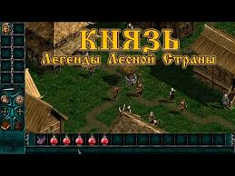
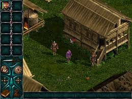
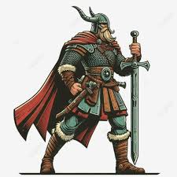
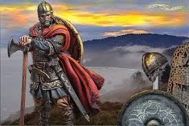
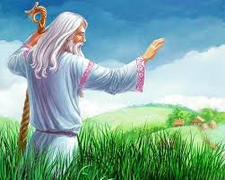

Сюжет
Тысячи лет назад, во времена господства Титанов, Северный клан обладал множеством магических предметов, известных как Поющие Вещи. Самой грозной из них считался браслет «Владыка», способный даровать власть над миром. Для защиты артефактов демиурги создали особую расу преданных воинов, наделенных бессмертием.
На закате своей эпохи Титаны надежно спрятали браслет «Владыка», надеясь, что в будущем он поможет возродить Северный клан. Охрану опасного артефакта они поручили одному из своих драконов, которого мог контролировать лишь специальный амулет.
Хранителем Амулета Дракона, в свою очередь, был назначен Ар. Тысячи лет он исполнял свою миссию, пока извечные враги Северного клана, Желтые Собаки, не обнаружили его отряд в небольшой лесной крепости. Захватчики атаковали крепость и уничтожили весь её гарнизон. Незадолго до гибели Ар успел разделить Амулет Дракона на три части и отправить с ястребами старым соратникам — славянину Всеславу, викингу Сигурду и византийцу Михаилу.
Последняя воля хранителя сбылась лишь частично. В Скандинавии Сигурда зарубил Драгомир из Северного клана, а в землях славян ястреба с драгоценной ношей подстрелил Волк из клана Охотников. Лишь Михаил законно получил часть амулета и узнал таким образом о смерти Ара.
Хорошо понимая, какой силой обладает собранный Амулет Дракона, трое героев, каждый со своей частью, выступили в поход. Их пути пересекутся в Лесной стране и лишь один должен выйти победителем.

Сюжет
Один из трех героев, упомянутых в предыстории, начинает свой путь в Лесной стране. Главное сюжетное задание — найти недостающие части Амулета Дракона и объединить их, затем получить с его помощью доступ к браслету «Владыка». Чтобы добиться победы, князю предстоит набраться боевого опыта, собрать дружину, выполнить ряд сюжетных и побочных заданий и подчинить окрестные поселения. Ключевую роль в прохождении играют уникальные артефакты и снаряжение. В конечном итоге протагонист должен разыскать двух героев-оппонентов и бросить им вызов, затем отправиться в логово Дракона и вступить в решающую битву за браслет «Владыка».
С обретением браслета игра заканчивается. Сюжет основного квеста линейный, финал одинаковый для всех. Дальнейшая судьба победителя раскрывается в продолжениях игры — Князь 2: Кровь Титанов и Князь 2: Продолжение легенды. В них события первого «Князя» получили название войны за Амулет Дракона.

Князья
Герои в «Князе» — бессмертные воины, представители особой породы людей, созданной Титанами. Каждый из них разменял не одну тысячу лет. Несмотря на бессмертие, они уязвимы и могут быть убиты.
Драгомир — викинг, герой Северного клана, сильнейшего во времена Титанов. Долгое время собирал вокруг себя лучших воинов, готовясь к решающей битве за главенство в клане. Незаконно завладел частью Амулета Дракона, убив ее владельца — викинга Сигурда. Разделение амулета предвещало тревожные события, в том числе потерю бессмертия, поэтому Драгомир сразу же отправился в Лесную страну. Считается «каноничным» героем для прохождения, поскольку играет ключевую роль в сюжете продолжений.

Михаил — византиец, старый друг и боевой товарищ Всеслава. Оставил военные походы, чтобы заняться изучением наук. Поняв, что Ар погиб и судьба браслета «Владыка» неясна, он отложил все дела и прибыл в Лесную страну с отрядом ветеранов, охраняющих византийский торговый пост. Михаил является единственным законным получателем части амулета, отправленной Аром.

Волк — славянин, последний представитель клана Охотников. Со времен Титанов живет в Лесной стране, проводя время в охоте и странствиях; ему нет равных в стрельбе из лука. Как и Драгомир, получил свою часть Амулета нечестным путем: он подстрелил сокола, который нес её Всеславу. Полный решимости возродить свой клан, Волк начал готовиться к битве за браслет «Владыка».

Волхвы
Особое место в игре занимают волхвы — старцы-волшебники, уединенно обитающие в глуши. Они нередко выдают задания или играют в них ключевую роль. Также волхвы продают или дарят редкие артефакты, благословляют и снимают порчу, делятся тайными знаниями и т. д. Только у волхвов можно купить шары магического прыжка, позволяющие князю и дружине мгновенно телепортироваться между локациями.

Население
Всего в игре представлено три играбельных народа: славяне, викинги и византийцы. Они различаются только внешне, не имеют особых характеристик или «расовых» способностей. В игре отсутствуют типичные для западного фэнтези расы (эльфы, гномы, орки и т. д.) или их аналоги.
Славяне — местное население Лесной страны, жители большей части поселений. Это мирные племена, которые промышляют охотой и рыболовством. Населяют девять деревень, большая часть которых находится на юго-западе. К пришельцам относятся настороженно, особенное недоверие вызывают византийцы. Славяне по праву считаются лучшими стрелками из лука.

Викинги — германо-скандинавские налетчики, осевшие в Лесной стране. Поклоняются Вотану. Викингам принадлежит четыре крупных лагеря в северной части Лесной страны. Если освободить и заселить Верхний лагерь, число поселений возрастет до пяти. Живут в мире с местным населением, хотя иногда между племенами случаются стычки. Среди местных северяне пользуются репутацией грубого народа, а недавно прибывшие византийцы их откровенно презирают. Викинги хорошо известны своей физической силой и храбростью. В скандинавских поселениях нельзя увидеть женщин и детей.

Византийцы — выходцы из далекой и богатой Византийской империи. Владеют одним-единственным военным лагерем, но по численности жителей и обилию дани он превосходит все остальные поселения Лесной страны. Ромеи прибыли в Лесную страну недавно и не пользуются популярностью, поскольку высокомерны и считают местное население дикарями. Особенно их не любят викинги. Привычные к долгим и изнурительным походам, византийцы славятся своей выносливостью и одаренностью в купеческом деле.

Различия между моделями персонажей в «Князе» (включая главного героя) определяются только национальностью и цветом одежды. Главный герой имеет «уникальную» пурпурную расцветку одежды. Поселения отличаются друг от друга стилем построек, на общем фоне визуально выделяется палаточный Византийский лагерь.